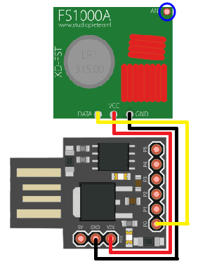

Autor: @br0sck
⣆⠈⠳⣄⡀⠀⠀⠀⠀⠀⠀⠀⠀⠀⠀⠀⠀⠀⠀⠀⠀⠀⠀⠀⠀⠀⠀⠀⠀⠀⠀⠀⠀⠀⠀⠀⠀⠀⠀⠀⠀⠀⠀⠀⠀⠀⠀⠀⠀⠀⠀⠀⠀⠀⠀⠀⠀⠀⠀⠀⠀⡠⠴⠒⢲
⠘⢦⡀⠀⠙⠲⣄⡀⠀⠀⠀⠀⠀⠀⠀⠀⠀⠀⠀⠀⠀⠀⠀⠀⠀⠀⠀⠀⠀⠀⠀⠀⠀⠀⠀⠀⠀⠀⠀⠀⠀⠀⠀⠀⠀⠀⠀⠀⠀⠀⠀⠀⠀⠀⠀⠀⠀⢀⡤⠖⠉⠀⢀⡴⠋
⠀⢻⣍⠲⢄⡐⠤⣉⠓⠦⣄⠀⠀⠀⠀⠀⠀⠀⠀⠀⠀⠀⠀⠀⠀⠀⠀⠀⠀⠀⠀⠀⠀⠀⠀⠀⠀⠀⠀⠀⠀⠀⠀⠀⠀⠀⠀⠀⠀⠀⠀⠀⠀⢀⣠⠴⠚⣁⠀⠀⣀⡴⠟⣪⠇
⠠⡤⠽⢦⣀⠈⠑⠢⢍⣒⠤⣉⡒⠤⣀⠀⠀⠀⠀⠀⠀⠀⠀⠀⠀⠀⠀⠀⠀⠀⠀⠀⠀⠀⠀⠀⠀⠀⠀⠀⠀⠀⠀⠀⠀⠀⠀⠀⠀⢀⣠⠴⠚⣉⠤⢒⣩⠴⠒⠉⢁⡠⣚⢥⠀
⠀⠙⢶⡀⠈⠙⠒⠤⣐⡪⠭⣒⡘⢍⡁⢍⣒⠢⢄⣀⠀⠀⠀⠀⠀⠀⠀⠀⠀⠀⠀⠀⠀⠀⠀⠀⠀⠀⠀⠀⠀⠀⠀⠀⠀⣀⣤⣖⠪⠭⠈⣉⠽⣐⠮⢕⣊⡤⠤⠒⠋⢉⡤⠊⠀
⠀⠀⠰⡛⠓⠢⢤⣀⡀⠬⢝⣒⡪⢏⡈⠝⣒⡨⣿⢿⡑⢦⠀⠀⠀⠀⠀⠀⠀⠀⠀⠀⠀⠀⠀⠀⠀⠀⠀⠀⠀⠀⠀⣴⠏⡰⢅⣖⡲⠾⠍⣩⢯⣒⣋⠥⢤⣒⠠⠤⠐⢛⡶⠂⠀
⠀⠀⠀⠈⣒⠤⢄⣀⡈⠍⣒⡒⠠⠵⣏⠙⠒⢺⣅⢿⡍⠀⣇⠀⠀⠀⠀keep learning ⠀⠀⠀⢰⡏⠀⣹⢥⡗⠶⠌⣉⠯⠔⣒⣊⠩⠁⠀⣀⣠⣖⣏⠀⠀⠀
⠀⠀⠀⠀⠑⢤⡀⠀⠈⠉⠒⠒⠫⠭⢼⣛⠒⠒⡧⣽⣏⡀⢸⡀⠀⠀⠀keep hacking!⠀⠀⠀ ⣸⠁⣈⣷⡲⡏⠉⣙⡯⠭⠥⠒⠒⠊⠉⠉⠀⢀⡴⠃⠀⠀⠀
⠀⠀⠀⠀⠀⠠⡌⠙⠒⠊⠬⠭⠥⠤⠰⣞⡉⠉⣟⡵⣯⣠⠀⠑⢤⡀⠀⠀⠀⠀⠀⠀⠀⠀⠀⠀⠀⠀⠀⢀⡤⠚⡁⢠⡾⣟⣍⡎⠭⢖⣏⣉⡥⠤⠤⠤⠤⠴⠭⡅⠀⠀⠀⠀⠀
⠀⠀⠀⠀⠀⠀⠙⠲⠤⢀⡀⠀⠀⠀⠴⠦⢍⡉⢿⡜⡽⢸⢾⣦⣤⠉⡕⢲⣒⡆⠀⠀⠀⠀⠀⠀⡖⣺⠻⣏⣰⣄⣿⣟⡼⡿⣾⣞⣉⠿⠭⢐⣀⣀⣀⣀⣤⡴⠚⠁⠀⠀⠀⠀⠀
⠀⠀⠀⠀⠀⠀⠀⠰⢏⣉⠉⠀⣀⣠⢴⠖⠽⡴⣞⢿⣇⣎⠋⡇⢫⢻⡱⣞⣿⡤⡄⠀⠀⠀⠀⡼⣽⣟⡟⢿⢛⣎⡏⣾⢮⣟⣽⡷⡛⠧⢖⣒⣂⢀⣀⣀⠴⠃⠀⠀⠀⠀⠀⠀⠀
⠀⠀⠀⠀⠀⠀⠀⠀⠀⠀⠉⠀⢀⠖⠁⡴⢋⡤⡳⢻⢀⢿⢹⢹⢞⢳⢏⣯⣹⠳⡷⡀⠀⢀⣜⡗⣏⣹⡏⢻⣯⣻⢹⢱⣟⢼⢻⣳⡌⠑⠄⠑⣄⠀⠀⠀⠀⠀⠀⠀⠀⠀⠀⠀⠀
⠀⠀⠀⠀⠀⠀⠀⠀⠀⠀⠀⠀⠸⣀⠤⢒⣟⠜⢁⡎⡝⡸⡶⢻⢳⢯⣢⠻⡝⡌⢮⠿⠀⢸⣪⡎⡰⣫⢷⣻⢳⢻⠒⡿⡝⡍⣆⠱⠜⣶⠤⠄⡸⠀⠀⠀⠀⠀⠀⠀⠀⠀⠀⠀⠀
⠀⠀⠀⠀⠀⠀⠀⠀⠀⠀⠀⠀⠀⠀⠀⢸⣊⠴⠻⠜⢠⡇⠃⢸⡸⠀⣧⠃⢸⢆⡼⠀⠀⠀⠘⠦⢞⡇⢪⠇⠘⣸⠀⡗⣧⢳⢸⠙⠦⠼⠆⠀⠀⠀⠀⠀⠀⠀⠀⠀⠀⠀⠀⠀⠀
⠀⠀⠀⠀⠀⠀⠀⠀⠀⠀⠀⠀⠀⠀⠀⠀⠀⠀⢫⣠⠋⡇⢠⠎⢧⢂⡜⠢⠎⠀⠀⠀⠀⠀⠀⠀⠈⠧⠾⡄⣠⠋⢧⣠⠎⠣⡼⠀⠀⠀⠀⠀⠀⠀⠀⠀⠀⠀⠀⠀⠀⠀⠀⠀⠀
⠀⠀⠀⠀⠀⠀⠀⠀⠀⠀⠀⠀⠀⠀⠀⠀⠀⠀⠈⠁⠀⠙⠉⠀⠈⠉⠀⠀⠀⠀⠀⠀⠀⠀⠀⠀⠀⠀⠀⠈⠁⠀⠀⠀⠀⠀⠀⠀⠀⠀⠀⠀⠀⠀⠀⠀⠀⠀⠀⠀⠀⠀⠀⠀⠀
╔══════════════[Sumário]══════════════╗
║ ║
║ 1. Introdução ║
║ 2. Capacidade ║
║ 3. Materiais ║
║ 4. Mãos à Obra! ║
║ 4.1 Circuito ║
║ 4.2 Código ║
║ 4.3 Hora do jogo! ║
║ 5. Conclusão ║
║ ║
╚═════════════════════════════════════╝
Introdução
Sem sombra de dúvida, o campo do hardware hacking sempre foi terreno fértil para os mais curiosos — sejam entusiastas em busca de experimentação ou profissionais da tecnologia que desejam ir além das camadas abstratas do software. Já imaginou construir seu próprio dispositivo com o objetivo explícito de explorar, manipular ou mesmo interferir em sistemas? Pois bem — curioso, não?
Neste paper, exploraremos a construção de um jammer de 443 MHz com um orçamento inferior a R$50, provando que com pouco investimento é possível obter um dispositivo funcional e eficaz. O objetivo não é apenas apresentar um projeto acessível, mas também desmistificar parte do universo do hardware hacking, tornando-o mais compreensível tanto para iniciantes quanto para aqueles com alguma experiência na área.
Para acompanhar este material, espera-se que o leitor tenha uma familiaridade mínima com o ecossistema Arduino — mesmo que superficial, como aquela adquirida em disciplinas básicas de engenharia. Alguns trechos exigirão conhecimento prévio para garantir a compreensão completa do desenvolvimento proposto.
OBS.: não utilize desta informação para prejudicar terceiros de forma alheia, este paper tem como fins educativos. Todos tem consciência sobre seus atos.
Podemos continuar??
Capacidade
Um jammer de 443 MHz pode parecer simples no primeiro momento, porém ele tem sua capacidade. Mesmo pequeno, ele é capaz de bloquear:
* Controles remotos de portões automáticos
* Chave de carros e alarme
* Dispositivos IoT (Internet of Things)
* Alarme residencial
Estes são apenas alguns dos exemplos.
Materiais
Antes de darmos inicio de fato, precisamos dos seguintes materiais:
* Digispark Attiny85 (R$30):
Por ser uma placa compacta, barata e com entrada USB, é ideal tanto para conectar com facilidade quanto para armazenar o código.
* Módulo Transmissor FS1000A (R$10):
Será responsável pela taréfa principal, bloquear o sinal :).
* Antena Helicoidal 2DBI (R$4):
Necessário para o módulo FS1000A operar em 433 MHz, caso ao contrário, ele irá operar em 315 MHz.
Mãos à obra?!
Mãos à Obra!
Circuito

O módulo FS1000A tem 3 pinos, são eles DATA, VCC e GND, significando:
* DATA: Saída de dados. Como trata-se de um transmissor, ele apenas realiza envio de dados (output).
* VCC: Alimentação por energia, operado em 3.3V a 5V.
* GND: Ponto de referência zero volts (não é o mesmo que negativo, porém pode ser entendido como polo negativo/neutro).
VCC do FS1000A será ligado em VIN do Digispark Attiny85.
GND do FS1000A será ligado em GND do Digispark Attiny85.
DATA do FS1000A será ligado em P0 do Digispark Attiny85 (onde realizará o OUTPUT de dados).
Detalhe importante: onde está circulado de azul, é aonde você irá soldar a antena helicoidal 2DBI. Essa etapa é obrigatória, caso ao contrário, o jammer irá operar em 315 MHz.
Código
╔═════════════════════════════════════════════════════════════════════════════════╗
║ #define FS1000A_PIN 0 ║
║ ║
║ void setup() { ║
║ pinMode(FS1000A_PIN, OUTPUT); ║
║ digitalWrite(FS1000A_PIN, LOW); ║
║ } ║
║ ║
║ void loop() { ║
║ for (int sequence = 1; sequence < 50; sequence++) { ║
║ for(int duration = 1; duration <= 3; duration++) { ║
║ digitalWrite(FS1000A_PIN, HIGH); ║
║ for (int widthsize = 1; widthsize <= (1 + sequence); widthsize++) { ║
║ delayMicroseconds(50); ║
║ } ║
║ digitalWrite(FS1000A_PIN, LOW); ║
║ for (int widthsize = 1; widthsize <= (1 + sequence); widthsize++) { ║
║ delayMicroseconds(50); ║
║ } ║
║ } ║
║ } ║
║ } ║
╚═════════════════════════════════════════════════════════════════════════════════╝
╔═══════════════════════╗
║ #define FS1000A_PIN 0 ║
╚═══════════════════════╝
Define o pino 0 da Digispark como saída para o módulo transmissor RF FS1000A.
╔═════════════════════════════════════╗
║ void setup() { ║
║ pinMode(FS1000A_PIN, OUTPUT); ║
║ digitalWrite(FS1000A_PIN, LOW); ║
║ } ║
╚═════════════════════════════════════╝
Configura o pino como saída e garante que ele inicie em nível BAIXO (sem transmissão).
╔═════════════════════════════════════════════════════════╗
║ void loop() { ║
║ for (int sequence = 1; sequence < 50; sequence++) { ║
╚═════════════════════════════════════════════════════════╝
Inicia uma sequência de 49 iterações, onde o valor de sequence aumenta de 1 a 49. Isso modifica o "comprimento" dos pulsos que serão emitidos.
╔════════════════════════════════════════════════════╗
║ for(int duration = 1; duration <= 3; duration++) { ║
╚════════════════════════════════════════════════════╝
Repete 3 vezes para cada valor de sequence. Isso gera 3 pulsos semelhantes para cada configuração de sequência.
╔═════════════════════════════════════════════════════════════════════╗
║ digitalWrite(FS1000A_PIN, HIGH); ║
║ for (int widthsize = 1; widthsize <= (1 + sequence); widthsize++) { ║
║ delayMicroseconds(50); ║
║ } ║
╚═════════════════════════════════════════════════════════════════════╝
Liga o transmissor por um tempo proporcional a sequence × 50µs. Neste tempo, ele emiti pulsos.
╔═════════════════════════════════════════════════════════════════════╗
║ digitalWrite(FS1000A_PIN, LOW); ║
║ for (int widthsize = 1; widthsize <= (1 + sequence); widthsize++) { ║
║ delayMicroseconds(50); ║
║ } ║
╚═════════════════════════════════════════════════════════════════════╝
Desliga o transmissor e pausa por um tempo, criando uma onda simétrica.
Em resumo, o código envia sinais de rádio ligando e desligando o pino 0 rapidamente. Esses pulsos vão aumentando de duração aos poucos, ou seja, ele começa mandando pulsos bem curtinhos e, a cada repetição, deixa eles um pouco mais longos. Isso resulta em uma interferência caso outros dispositivos tente comunicar por esta frequência.
Em seguida, compile o código e vamos para a etapa de teste ;).
Hora do jogo!
Agora que está tudo pronto, você pode testar em algum dos dispositivos citados em Capacidade (com permissão, claro).
Infelizmente não consegui extrair o vídeo de minha câmera como prova de conceito (PoC), ainda irei tentar, então caso tenha interesse, confira este paper algumas vezes para ver a PoC.
Conclusão
A construção de um jammer de 443 MHz com baixo custo não apenas demonstra o poder da experimentação dentro do hardware hacking, mas também reforça como é possível explorar, aprender e intervir em sistemas reais com recursos limitados. Este projeto mostra que o conhecimento técnico, aliado à criatividade, é capaz de ultrapassar barreiras e tornar acessível o que antes parecia exclusivo de profissionais ou laboratórios avançados.
Mais do que apenas montar um circuito ou compilar um código, o que propomos aqui é uma vivência prática — um convite ao leitor para explorar os limites da eletrônica e da comunicação sem fio, entendendo não só o “como”, mas principalmente o “porquê” de cada passo.
Por fim, reforçamos o compromisso ético: este conteúdo é educacional. Use com responsabilidade, pois conhecimento sem consciência pode se tornar uma arma — mas com propósito e ética, transforma-se em ferramenta de evolução.
Nos vemos na próxima criação?
⢀⡀⠀⠀⠀⠀⠀⠀⠀⠀⠀⠀⠀⠀⠀
⠀⢻⡆⠀⠀⠀⠀⠀⠀⠀⠀⠀⠀⣠⠀
⠀⠸⠀⠇⠀⠀⠀⠀⠀⠀⠀⠀⢠⡼⠀
⠀⡿⠲⠀⠐⠀⠀⠀⠀⠀⠀⠀⢲⠸⡄
⠀⢧⠀⠙⣀⠀⠀⠀⠀⠀⠀⣸⡟⢠⡄
⠀⠰⡄⠀⠈⠀⢦⠀⠀⠀⢀⣻⠁⠼⠀
⠀⠀⠨⡄⠀⠈⢯⣁⠀⣠⡴⡍⡴⠁⠀
⠀⠀⠀⠈⠢⠀⠈⡉⣭⣳⣿⠕⠀⠀⠀
⠀⠀⠀⠀⢠⡐⢿⡿⣯⣿⣈⢷⡦⠀⠀
⠀⠀⠀⣰⠟⡰⣿⡷⢵⢮⢯⣅⡟⠈⠀
⠀⠀⠈⠼⠿⢘⠁⢻⣯⢎⢵⡧⠻⠶⠀
⠀⠀⠀⠀⠀⠈⠡⢄⠫⠋⠘⠁⠀⠀⠀
⠀⠀⠀⠀⠀⠀⠀⡷⣗⠇⠀⠀⠀⠀⠀
⠀⠀⠀⠀⠀⠀⡰⣷⣿⠀⠀⠀⠀⠀⠀
⠀⠀⠀⠀⠀⡨⡿⢿⠇⠀⠀⠀⠀⠀⠀
⠀⠀⠀⠀⠀⠉⢸⡿⠀⠀⠀⠀⠀⠀⠀
⠀⠀⠀⠀⠀⠀⠸⠇⠀⠀⠀⠀⠀⠀⠀